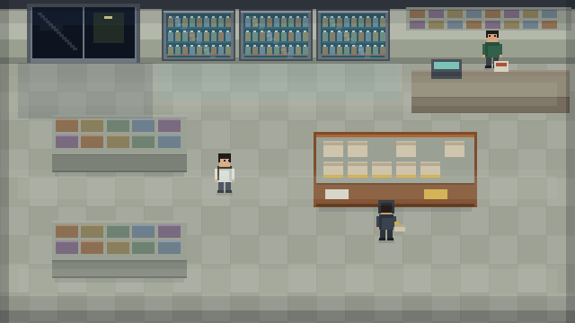
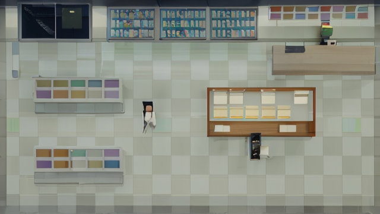
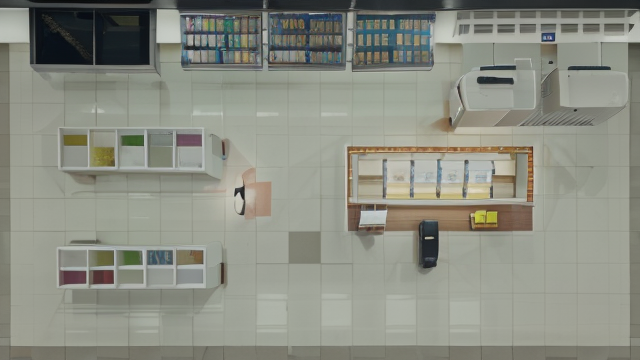
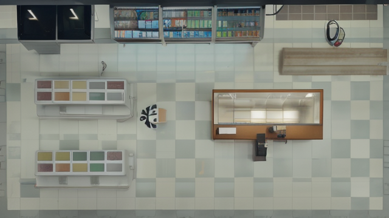
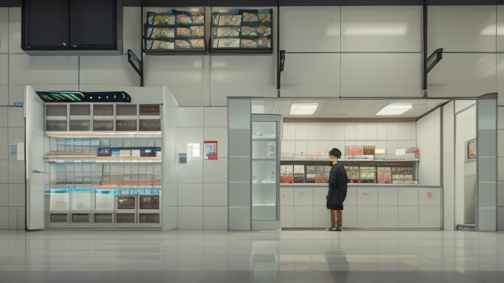

NO-WAY-UP ／ 灰模上色測試
同一張構圖，四種 AI 參數
管線是通的：我畫灰模鎖住構圖 → AI 只負責上質感。
下面每一張的視角、貨架位置、人物站位都來自同一份程式碼，AI 動不了。
要看的是質感——有沒有變成你要的「髒、暗、有生活痕跡」。

0 ／ 灰模（原始構圖）
我用程式畫的。空間關係正確，質感刻意留白。
下面三張都是拿這張去重畫的。

1 ／ majicmix・denoise 0.35
構圖保住質感沒進步
結構完整留著，但 AI 只是把色塊抹得柔一點。
而且顏色更亮更粉了——跟「髒」是反方向。

2 ／ majicmix・denoise 0.45
構圖大致在變成塑膠感
磁磚變得又白又新，像剛開幕的樣品屋。
人物爛成黑色團塊——AI 不知道那是人。

3 ／ dreamshaper・denoise 0.45
細節較多還是太乾淨
貨架上的商品比較像商品了，但整體依然明亮。
而且它把鮮食櫃理解成空的玻璃展示櫃。

4 ／ majicmix・denoise 0.55
視角整個垮掉
denoise 一拉高，AI 就把斜俯視「扶正」成平視店面。
它沒見過這種視角，只好照自己的習慣重畫。
結論：管線成功，模型不行
好消息——「灰模鎖構圖」這件事完全可行。denoise 0.35～0.45 之間，
視角、站位、貨架位置都守得住。這套管線換更好的模型就能直接用，不用重做。
壞消息——你機器上這兩個模型都是 SD 1.5（2022 年的技術），而且都是往
「乾淨、明亮、漂亮」訓練的。要它畫「髒」，它畫不出來。
更關鍵的是：SD 1.5 幾乎沒見過斜俯視的室內空間，訓練資料全是平視照片。
所以 denoise 一高它就把畫面扶正。
這不是 prompt 寫不好，是 4GB VRAM 能跑的模型就到這裡。